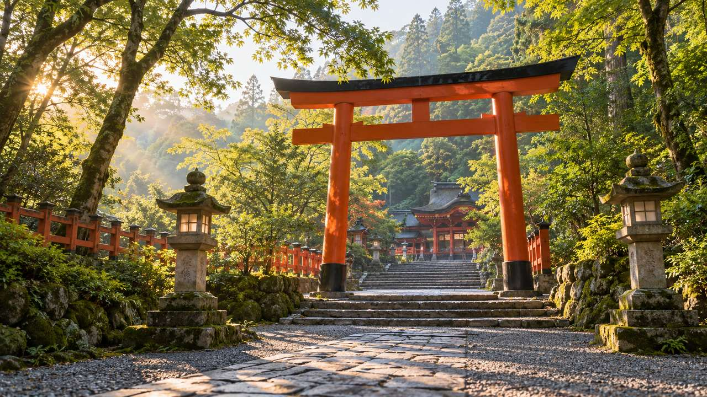
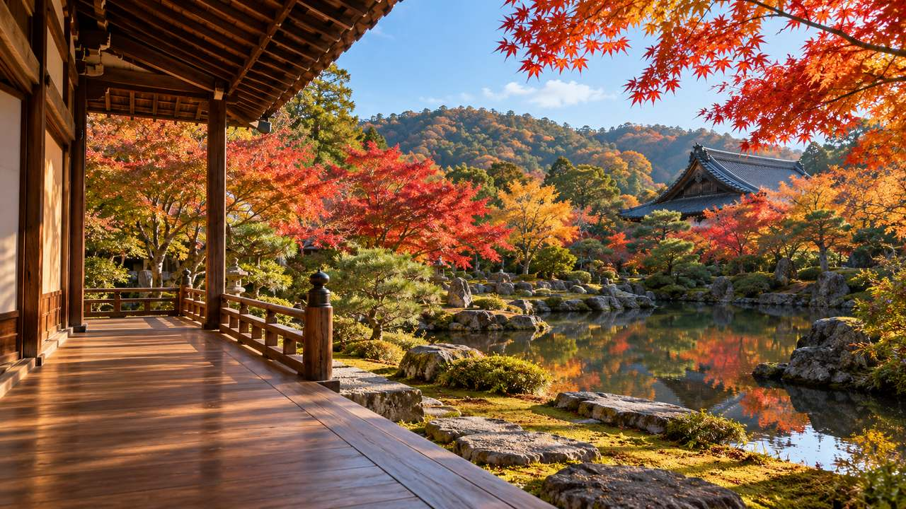
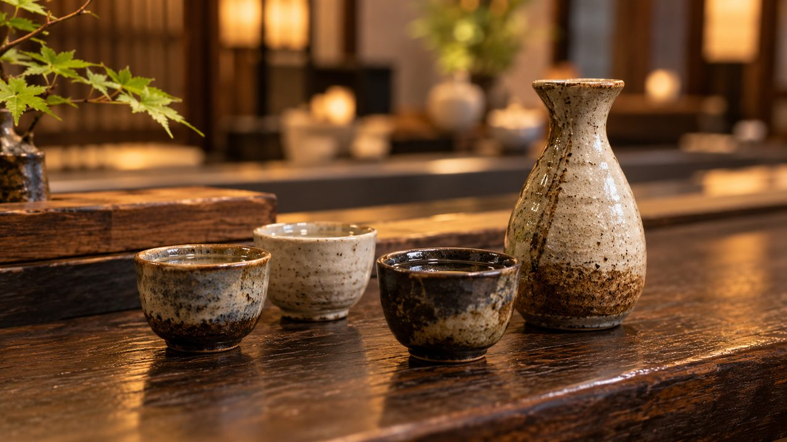
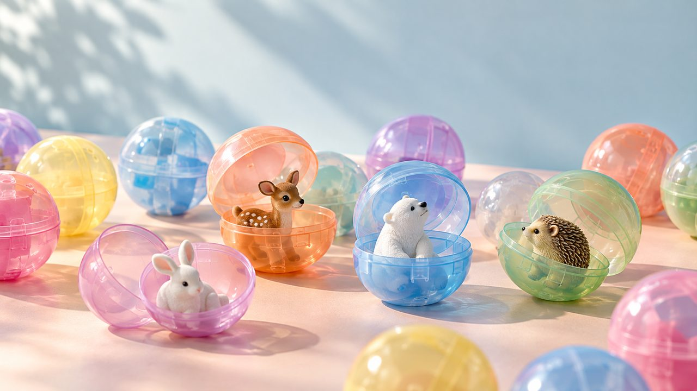
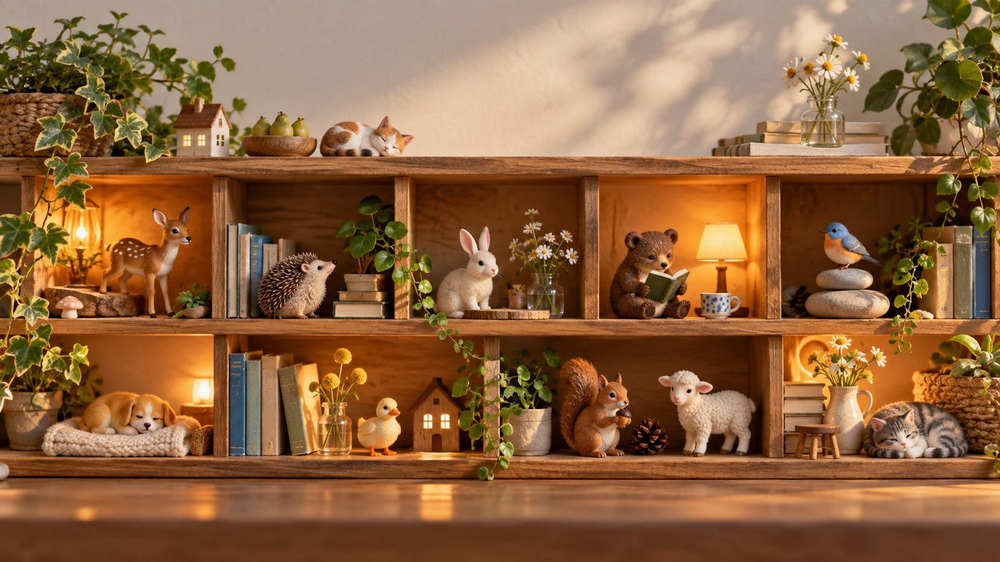

追加背景20枚
10ジャンル各2枚・16:9・1280×720 JPEG・合計3.32MB。内蔵画像生成で制作。
昼の劇場 / 158.8KB · 詳細画面舞台袖 / 130.6KB · 詳細画面野外フェス / 191.9KB · 詳細画面アコースティック / 137.8KB · 詳細画面映写室 / 112.3KB · 詳細画面星空シネマ / 162.9KB · 詳細画面彫刻ギャラリー / 150.3KB · 詳細画面博物館 / 190.3KB · 詳細画面書庫 / 193.1KB · 詳細画面読書室 / 163.8KB · 詳細画面青空のパーク / 188.7KB · 詳細画面青空とコースター / 196.0KB · 詳細画面動物園・レッサーパンダ / 197.4KB · 詳細画面水族館・ウミガメ / 160.6KB · 詳細画面
鳥居と参道 / 197.9KB · 詳細画面
紅葉の寺院 / 188.0KB · 詳細画面酒蔵 / 199.6KB · 詳細画面
利き酒 / 135.8KB · 詳細画面
カプセルトイ / 97.6KB · 詳細画面
コレクション棚 / 165.3KB · 詳細画面